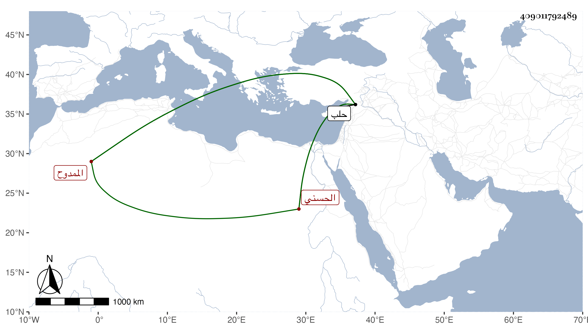

0902Sakhawi.DawLamic.ITO20230111-ara1.EIS1600.409011792489
Biography ID: 409011792489
968
علي بن محمد بن أحمد بن محمد بن أحمد بن علي بن محمد بن علي بن محمد بن عبد الله بن جعفر بن زيد بن أبي إبراهيم محمد الممدوح الزين أبو الحسن الحسني سبط الزين علي بن محمد بن أحمد بن علي من بيت لهم جلالة وشهرة . كان إنسانا حسنا لطيفا حسن الأخلاق كريما باشر الإنشاء بحلب سنين وعد في الأعيان بحيث عين لنظر الجيش بها ولما عاقب التتار الناس أمسكوه وملئوا سطل نحاس من الماء والملح ليسقوه إياه وشرعوا في ربطه فجاء ثور فشربه في لحظة فتعجبوا وأطلقوه ولم يعاقبوه . ومات بعد ذلك بيسير بريحا في سنة ثلاث ونقل إلى حلب فدفن عند أجداده وأقاربه بمشهد الحسين . ذكره ابن خطيب الناصرية وتبعه شيخنا في إنبائه باختصار .
